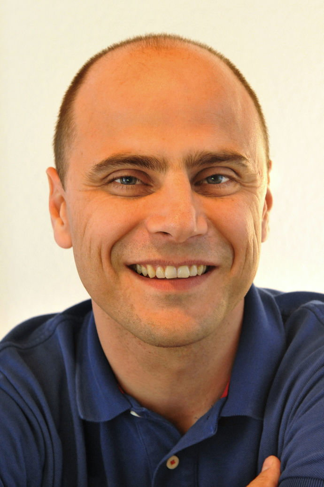

Seit meiner therapeutischen Erstausbildung zum Med. Masseur nehme ich laufend an Aus- und Weiterbildungen teil. Die umfangreichste und kompletteste Ausbildung im Anschluss war die Osteopathie, nach der ich die Ausbildung zum dipl. Naturheilpraktiker TEN durchlief.
Meine breite komplementärtherapeutische Ausbildung (siehe Rubrik „Curriculum vitae“) ermöglicht es mir, verschiedenste – insbesondere funktionelle – Beschwerden differenziert zu betrachten und effizient zu behandeln.
Nach einer gezielten Anamnese und ausführlicher Untersuchung arbeite ich über das muskuläre, bindegewebige und knöcherne System des Körpers. Dabei wende ich verschiedene manuelle Ansätze an, mit denen sich nahezu alle Gewebe des Körpers behandeln lassen:
Betreuung und Begleitung mit Phytotherapeutika
Muskel- und Faszientechniken
Gelenktechniken für Becken, Wirbelsäule, Rippen, Extremitäten, Kiefer
Organbehandlung
Cranio-sacrale Techniken
Techniken für das Gefäss- und Lymphsystem
Techniken für das zentrale und vegetative Nervensystem
Spezifische Techniken für Babys und Kleinkinder
Trotz meiner vertieften Ausbildung in Anatomie, Physiologie, Biomechanik und Pathologie ersetzt meine Behandlung keine ärztliche Behandlung und Diagnostik. Beschwerden oder Erkrankungen, die schulmedizinisch behandelt werden müssen, können oft begleitend mit Komplementärtherapie behandelt werden.
Mögliche Indikationen sich bei mir zu melden:
Im internistischen Bereich
Sodbrennen, Verdauungsstörungen, Reizdarm, Organsenkungen, Operationsfolgen u. a.
Im Bereich des Bewegungsapparates
Ischias, Lumbago, Hexenschuss, Beschwerden in allen Gelenken (Fuss, Knie, ...), Schleudertraumen u. a.
Im Hals-Nasen-Ohren-Bereich
Chronisch wiederkehrende Entzündungen, Schwindel, Tinnitus, Hörsturz u. a.
Zahn-/Kieferprobleme
Wenn möglich in Begleitung einer fachärztlichen Behandlung: Kreuzbiss, Zahnstellungskorrekturen, Kiefergelenksprobleme u. a.
Urogenital
Chronische Blasen- und/oder Nierenentzündungen, Menstruationsbeschwerden, Endometriose, Prostatabeschwerden, Inkontinenz u. a.
Kinderheilkunde
Schädel- oder Gesichtsverformungen, Schiefhals, Verdauungsstörungen, Blähungen, „Spuckkinder“, Schlafstörungen, Lern- und Konzentrationsstörungen, Sprachstörungen u. a.
Schwangerschaft
Sodbrennen, Übelkeit, Ischias, Steisslage des Babys, Geburtsvorbereitung u. a.
Kopfbereich
Wenn möglich in Begleitung einer fachärztlichen Behandlung: Kopfschmerzen, Migräne, Neuralgien, Sehbeschwerden u. a.
Die Natur bietet uns alles, was wir für Heilung und Wohlbefinden brauchen. In meiner Praxis nutze ich natürliche Heilmittel und sanfte manuelle Techniken, um Körper und Geist in Einklang zu bringen. Der Fokus liegt immer auf dem Menschen als Ganzes.
Ganzheitliche Betrachtung
Ursachenorientiertes Arbeiten
Nachhaltige Unterstützung
Curriculum Vitae

Name: Fisch
Vorname: Ildo
Geboren: 14. November 1975
Heimatort: Herisau/AR
Ausbildungen
2013–2015 · Ausbildung zum dipl. Naturheilpraktiker TEN an der Paramed, Baar (2 1/2-jähriges berufsbegleitendes Studium)
2003–2008 · Ausbildung zum dipl. Osteopath am College Sutherland, Ulm (DE) – 5-jähriges berufsbegleitendes Studium
1998–2001 · Ausbildung zum Med. Masseur FA SRK, St. Gallen – 3-jährige Vollzeitausbildung
1994 · Abschluss der kaufmännischen Ausbildung, Bern
Weiterbildungen
2017–2019 · Kursorganisation und Assistenz der Kursreihe „Grow Your Skills“ mit Tim Marris DO MSSC
2014–2017 · Kursorganisation und Teilnahme an „Grow Your Skills“ mit Tim Marris DO MSSC
2013 · „Trust Your Hands“ bei Tim Marris in Hamburg
2013 · Grundkurs Craniosacral-Movement, Rudolf Merkel, Zürich
2012 · Ausbildung in „Osteopathy in the Cranial Field“, SCC in der Proitzer Mühle (Deutschland)
2010–2012 · Ausbildung in qualitativer viszeraler Osteopathie bei Jürg Gschwend und Thomas Hirth, Zürich
2009–2011 · Osteopathie in der Pädiatrie 1–4, Kurszyklus bei Eva Möckel und Noori Mitha, Hamburg
2009 · Ausbildung in den peripheren Techniken nach Dr. Sutherland, SCC, Proitzer Mühle (Deutschland)
2001–2002 · Ausbildung „Viscerale Manipulation“ an der Dr. Vodder Schule, Walchsee/Tirol (Österreich)
Berufliches Curriculum Vitae
Nach Abschluss meiner therapeutischen Grundausbildung in St. Gallen habe ich eine Stelle als Med. Masseur in Lausanne angetreten. Ich war 17 Monate in Renens in der Physiotherapie et Reeducation DINO angestellt. Im Oktober 2002 habe ich die Leitung der Physikalischen Therapie des Medizinischen Zentrums in Bad Ragaz übernommen. Seit September 2007 bin ich mit Andreas Schmid in unserer Praxis BEWEGGRUND. in Chur tätig. Zusätzlich engagierte ich mich von Anfang 2007 bis Ende August 2011 als freier Mitarbeiter in der Osteopathiepraxis von M. van Geffen (Liechtenstein). Ab September 2011 war ich vollumfänglich in meiner Praxis in Chur tätig. Im September 2016 eröffnete ich eine Praxis in Triesenberg (Liechtenstein).
Die Kosten meiner Behandlung werden, im Rahmen Ihrer Zusatzversicherung (VVG), von Ihrer Krankenkasse mitgetragen. Hierzu benötigen Sie eine Zusatzversicherung, die eine Kostenübernahme bei „Alternativ- oder Komplementärmedizin“ beinhaltet. Sie brauchen keine Verordnung oder Überweisung. Bezüglich Kostendeckung bitte ich Sie um Rücksprache mit Ihrer Krankenkasse. In der Regel handelt es sich um eine Übernahme von ca. 75%.
Tarife
Behandlung à 60 Minuten: sFr. 150.—
Behandlung à 45 Minuten: sFr. 120.—
Behandlung à 30 Minuten: sFr. 90.—
Auch bei Fragen zu den Tarifen stehe ich Ihnen gerne telefonisch oder per E-Mail zur Verfügung.